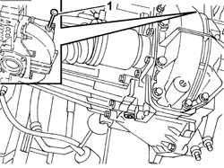

0010T41 MANUAL GEARBOX FLUID Check level and top up if necessary
- Path
- Procedures > 00 MAINTENANCE > 0010 NEW UNITS AND MAINTENANCE > 0010T vehicle oil and fluids > 0010T41 MANUAL GEARBOX FLUID Check level and top up if necessary
- Kind
- repair procedure (removal / refitting; the operation number is the code)
- Applies to
- engines: 2.0 TB, 2.4 20V, 2.4 JTD 10V, 2.4 JTD 20V; all production periods
- Interactive page
- https://sloeber94.github.io/elrnDB-lThss/en/#/606285
Applies to: engines: 2.0 TB, 2.4 20V, 2.4 JTD 10V, 2.4 JTD 20V; all production periods
- Position the vehicle on a lift.
- Raise the vehicle.
See in Op. 7055B54 PROTECTION/GUARD under engine - R.R.
1. Remove the fluid dipstick and check that the fluid level is between the MIN and MAX notches.
- If necessary, top up with the specified fluid to the MAX notch.
- Never exceed the MAX notch.
 | Description | Qty. | Component | Type | Classification |
|---|---|---|---|---|---|
. | TUTELA CAR ZC 75 Synth | 1,45 Litri | MANUAL GEARBOX/DIFFERENTIAL FLUID | API GL-5 MIL-L-2105 D LEV, | SAE 75W-80EP |

Applies to: engines: 2.0 TB, 2.4 20V, 2.4 JTD 10V, 2.4 JTD 20V; all production periods
See in Op. 7055B54 PROTECTION/GUARD under engine - R.R.
- Lower the vehicle and remove it from the lift.